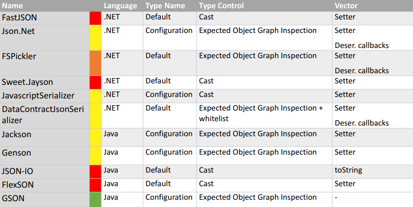

From https://www.blackhat.com/docs/us-17/thursday/us-17-Munoz-Friday-The-13th-Json-Attacks.pdf

FastJSON
Always includes Type discriminators
There is no Type check controls other than a post-deserialization cast - Var obj = (ExpectedType) JSON.ToObject(untrusted);
Invokes
Should never be used with untrusted data
Example:
JavaScriptSerializer
System.Web.Script.Serialization.JavaScriptSerializer
By default, it will not include type discriminator information - Type Resolver can be used to include this information.
- JavaScriptSerializer sr = new JavaScriptSerializer(new SimpleTypeResolver());
- string reqdInfo = apiService.authenticateRequest();
- reqdDetails det = (reqdDetails)(sr.Deserialize(reqdInfo));
Weak Type control: post-deserialization cast operation
During deserialization, it will call:
It can be used securely as long as a type resolver is not used or the type resolver is configured to whitelist valid types.
System.Runtime.Serialization.Json.DataContractJsonSerializer
Performs a strict type graph inspection and whitelist creation.
However, we found that if the attacker can control the expected type used to configure the deserializer, they will be able to gain code execution. Eg: - var typename = cookie["typename"];
- …
- var serializer = new DataContractJsonSerializer(Type.GetType(typename));
- var obj = serializer.ReadObject(ms);
Invokes: - Setters
- Serialization Constructors
Can be used securely as long as the expected type cannot be controlled by users.
Json.Net
It does not include Type discriminators unless TypeNameHandling setting other than None is used
Performs an inspection of Expected Type’s Object Graph - public class Message {
- [JsonProperty(TypeNameHandling = TypeNameHandling.All)]
- public object Body { get; set; }
- }
Invokes: - Setters
- Serialization callbacks
- Type Converters
Use SerializationBinder to whitelist Types if TypeNameHandling is required